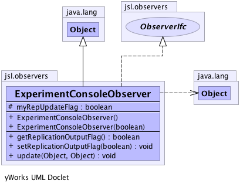

jsl.observers
Class ExperimentConsoleObserver
java.lang.Object
 jsl.observers.ExperimentConsoleObserver
jsl.observers.ExperimentConsoleObserver
- All Implemented Interfaces:
- ObserverIfc
public class ExperimentConsoleObserver
- extends java.lang.Object
- implements ObserverIfc
-
-

| Methods inherited from class java.lang.Object |
clone, equals, finalize, getClass, hashCode, notify, notifyAll, toString, wait, wait, wait |
myRepUpdateFlag
protected boolean myRepUpdateFlag
ExperimentConsoleObserver
public ExperimentConsoleObserver()
ExperimentConsoleObserver
public ExperimentConsoleObserver(boolean repUpdateFlag)
- Parameters:
repUpdateFlag -
setReplicationOutputFlag
public final void setReplicationOutputFlag(boolean flag)
getReplicationOutputFlag
public final boolean getReplicationOutputFlag()
update
public void update(java.lang.Object simulation,
java.lang.Object arg1)
- Description copied from interface:
ObserverIfc
- This method is called when the observable needs observing
- Specified by:
update in interface ObserverIfc
Copyright © 2012 Manuel D. Rossetti. All Rights Reserved.